MicroSimulations
This page provides an overview of all the interactive MicroSimulations available in the Ethics in Modern Society course. Each MicroSim is designed to help students explore ethical concepts through hands-on interaction.
Fairness Chapter MicroSims
-
AI Fairness Trade-offs Explorer
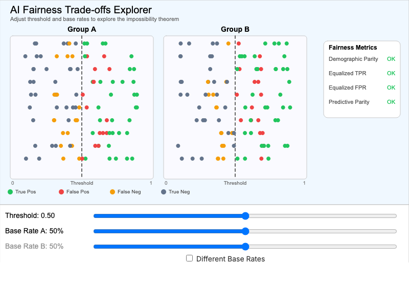
Explore why different algorithmic fairness definitions cannot all be satisfied simultaneously. Demonstrates the impossibility theorem.
-
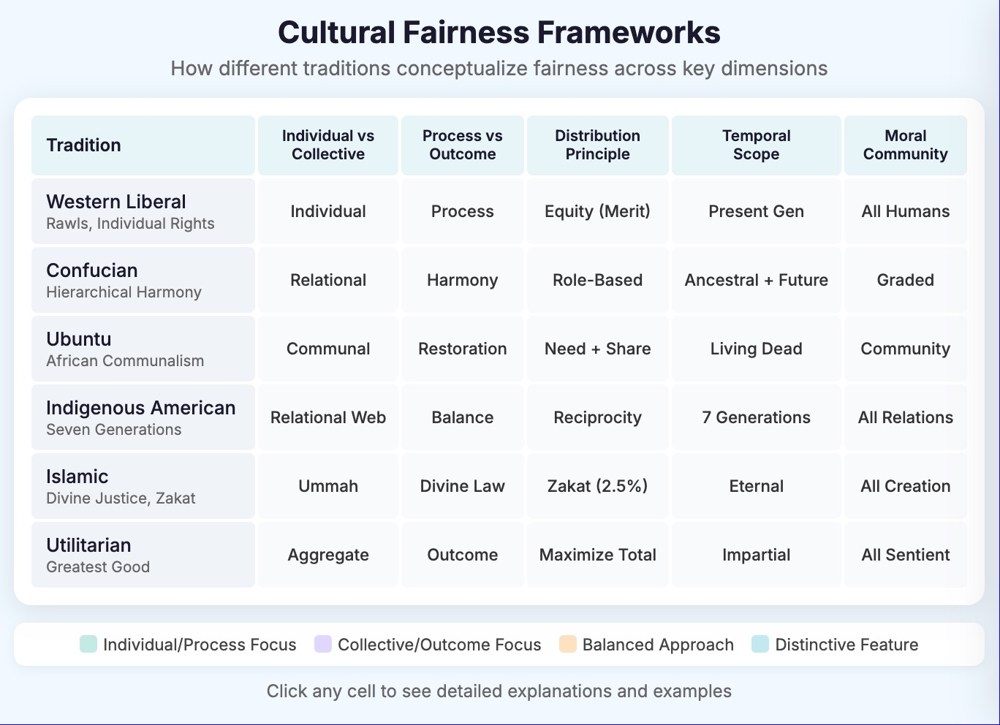
Compare how six major cultural and philosophical traditions conceptualize fairness across five key dimensions.
-
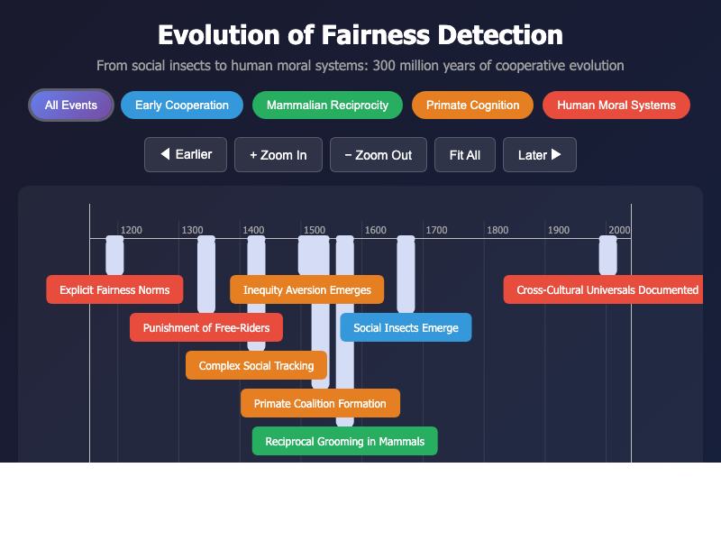
Explore the evolutionary emergence of fairness-related cognitive capacities across species over 300 million years.
-
AI Model Consensus: Fairness Venn
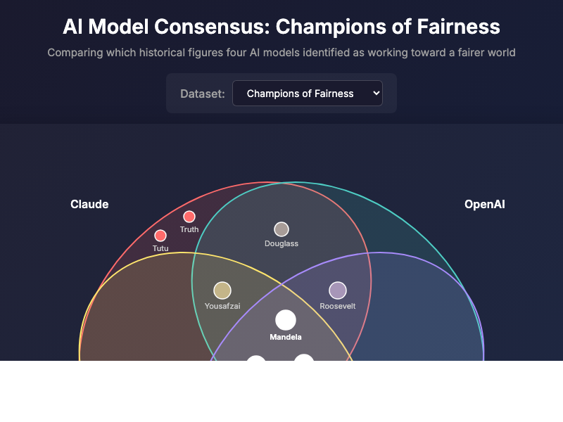
Compare which historical figures four AI models identified as champions of fairness or architects of unfairness.
Other MicroSims
-
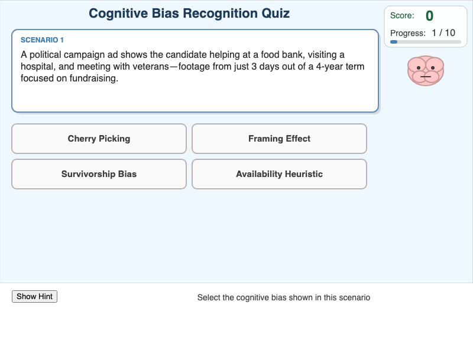
Test your ability to identify different types of cognitive biases through interactive scenarios.
-
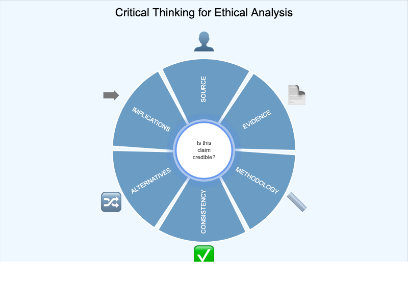
Explore the components of critical thinking and how they apply to ethical reasoning.
-
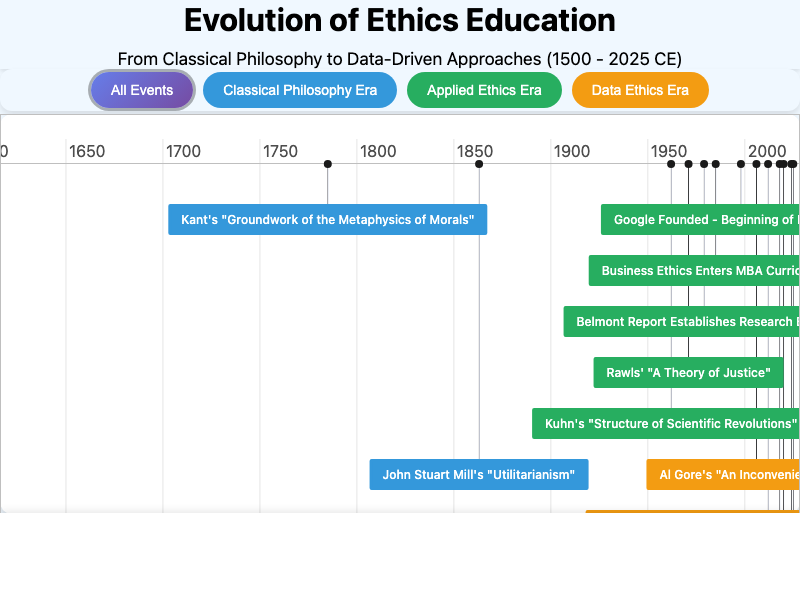
A chronological exploration of the history of ethics education from ancient philosophy to modern approaches.
-
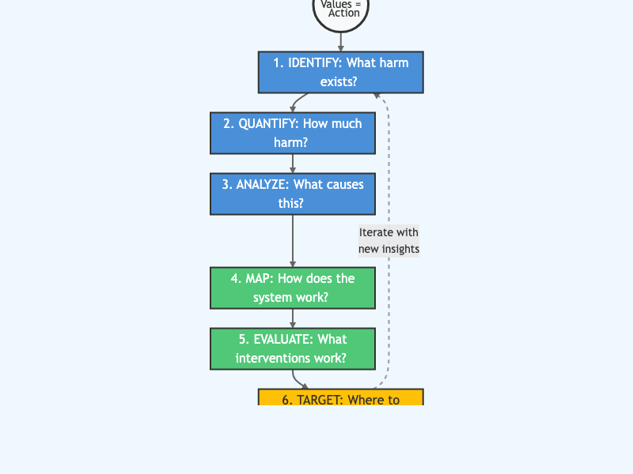
Visualize the step-by-step process of ethical decision-making using a flowchart approach.
-
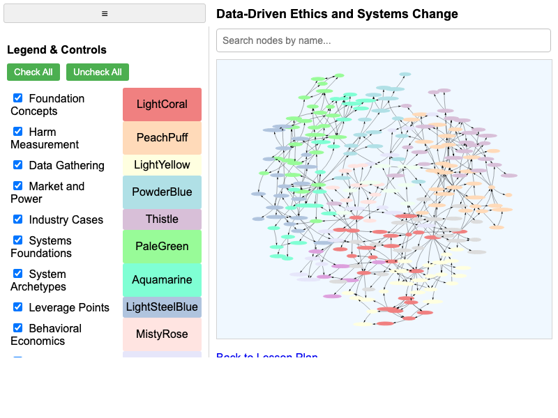
Explore the concept dependencies and learning paths in the ethics course curriculum.
-
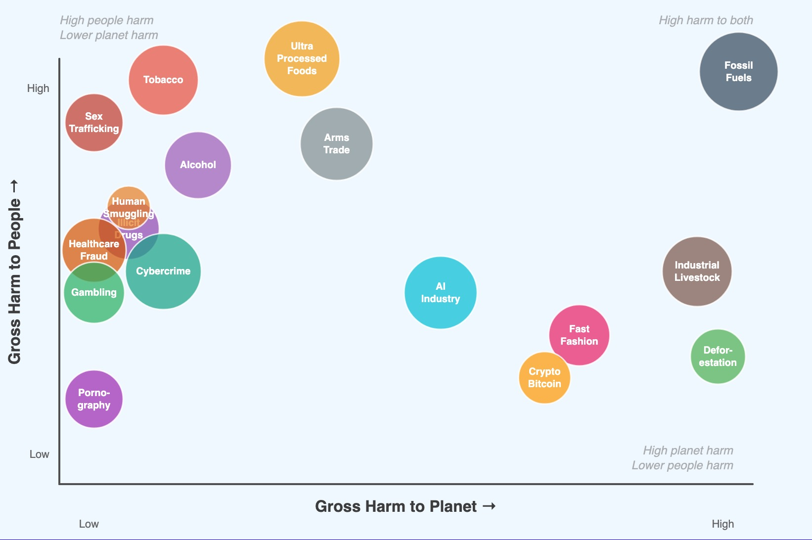
Compare the relative harm of different industries and practices using an interactive bubble chart.
-
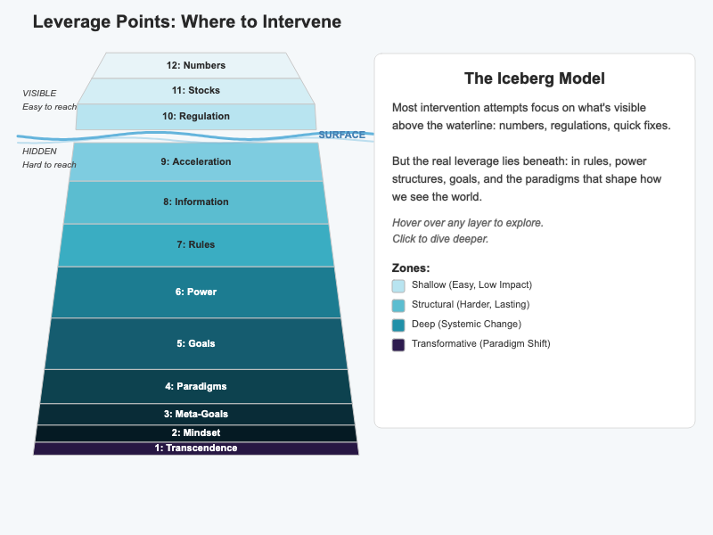
Explore Donella Meadows' leverage points framework using an iceberg model visualization.
-
Rank different industries by their ethical impact using various criteria.
-
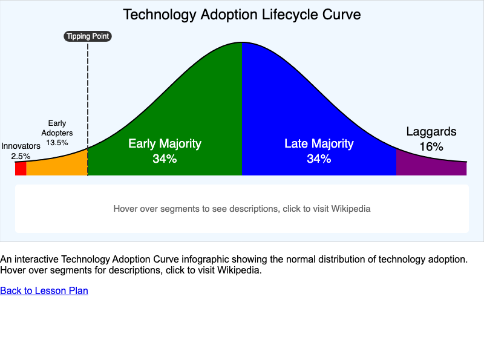
Explore how ethical technologies and practices spread through society over time.
-
Tobacco Industry System Dynamics
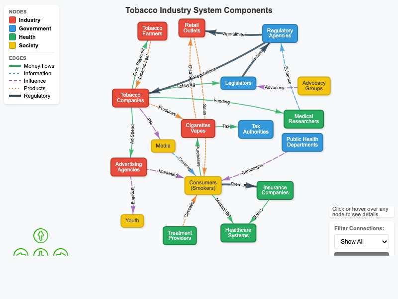
A systems thinking visualization of the tobacco industry's impact on public health.
About MicroSims
MicroSimulations are lightweight, interactive educational tools designed for browser-based learning. They feature:
Focused scope : Each addresses one specific learning objective
Immediate feedback : Students see effects of their choices instantly
Responsive design : Works on desktop, tablet, and mobile devices
Accessible : Designed with screen reader support and keyboard navigation
All MicroSims can be embedded in any web page using an iframe and are compatible with learning management systems like Canvas, Blackboard, and Moodle.